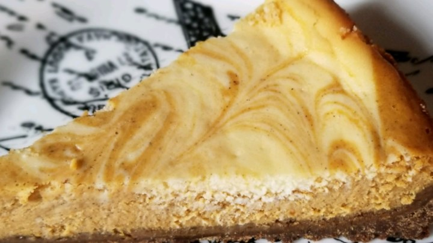

Assignment 05
Contact Me
Email me!
Recipe for Marbled Pumpkin Cheescake

Ingredients
1.5 cups crushed gingersnap cookies
.5 cup finely chopped pecans
1/3 cup butter
melted2 (8 ounce) packages cream cheese
softened3/4 cup white sugar
divided C&H Pure Cane Granulated Sugar 4 Lb
1 teaspoon vanilla extract
3 eggs
1 cup canned pumpkin
3/4 teaspoon ground cinnamon
1/4 teaspoon ground nutmeg
Directions
- 1. Preheat oven to 350 degrees F (175 degrees C). In a medium bowl, mix together the crushed gingersnap cookies, pecans, and butter. Press into the bottom, and about 1 inch up the sides of a 9 inch springform pan. Bake crust 10 minutes in the preheated oven. Set aside to cool.
- 2. In a medium bowl, mix together the cream cheese, 1/2 cup sugar, and vanilla just until smooth. Mix in eggs one at a time, blending well after each. Set aside 1 cup of the mixture. Blend 1/4 cup sugar, pumpkin, cinnamon, and nutmeg into the remaining mixture.
- 3. Spread the pumpkin flavored batter into the crust, and drop the plain batter by spoonfuls onto the top. Swirl with a knife to create a marbled effect.
- 4. Bake 55 minutes in the preheated oven, or until filling is set. Run a knife around the edge of the pan. Allow to cool before removing pan rim. Chill for at least 4 hours before serving.
Link to website for recipe